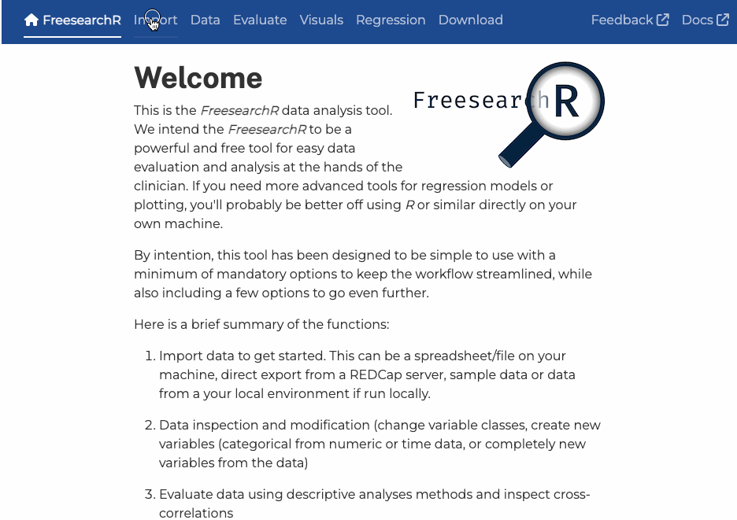

The FreesearchR is a simple, clinical health data exploration and analysis tool to democratise clinical research by assisting any researcher to easily evaluate and analyse data and export publication ready results.
FreesearchR is free and open-source, and is accessible in your web browser through this link. The app can also run locally, please see below.
All feedback is welcome and can be shared as a GitHub issue. Any suggestions on collaboration is much welcomed. Please reach out!

Motivation
This app has the following simple goals:
help the health clinician getting an overview of data in quality improvement projects and clinical research
help learners get a good start analysing data and coding in R
ease quick data overview and basic visualisations for any clinical researcher
Here’s a polished and restructured version of your README section for clarity, conciseness, and user-friendliness:
Run Locally on Your Own Machine
The FreesearchR app can be run locally on your machine, ensuring no data is transmitted externally. Below are the available options for setup and configuration.
Configuration & Data Loading
The app can be configured either by passing a named list to run_app() or by setting environment variables in a Docker Compose file. The following variables control data access and display behavior. If no values are provided, the app will use the defaults listed below.
Configuration Variables
| Variable | Description | Default |
|---|---|---|
INCLUDE_GLOBALENV |
Load datasets already present in the global R environment into the app | FALSE |
DATA_LIMIT_DEFAULT |
Default number of observations for previewing or working with a dataset | 10,000 |
DATA_LIMIT_UPPER |
Maximum number of observations a user can set for the upper limit | 100,000 |
DATA_LIMIT_LOWER |
Minimum number of observations a user can set for the lower limit | 1 |
Run from R (or RStudio)
If you’re working with data in R, FreesearchR is a quick and easy tool for exploratory analysis.
Requirement: Ensure you have R installed, and optionally an editor like RStudio.
-
Open the R console and run the following code to install the FreesearchR package and launch the app:
if (!require("devtools")) install.packages("devtools") devtools::install_github("agdamsbo/FreesearchR") library(FreesearchR) # Load sample data (e.g., mtcars) to make it available in the app data(mtcars) launch_FreesearchR(INCLUDE_GLOBALENV=TRUE)
All the variables specified above can also be passed to the app on launch from R.
Running with Docker Compose
For advanced users, you can deploy FreesearchR using Docker. A data folder can be mounted to /app/data to automatically load supported file types (.csv, .tsv, .txt, .xls, .xlsx, .ods, .dta, .rds) at startup.
To mount a local data folder, add a volumes entry to your docker-compose.yml file:
services:
shiny:
image: ghcr.io/agdamsbo/freesearchr:latest
volumes:
- ./data:/app/data:ro
environment:
- INCLUDE_GLOBALENV=FALSE
- DATA_LIMIT_DEFAULT=10000
- DATA_LIMIT_UPPER=100000
- DATA_LIMIT_LOWER=1
ports:
- '3838:3838'
restart: on-failureThe
:roflag mounts the folder as read-only, preventing the app from modifying your original data files.If no volume is mounted, the app will start without any preloaded datasets.
Code of Conduct
Please note that the FreesearchR project is published with a Contributor Code of Conduct. By contributing to this project, you agree to abide by its terms.
Translators
Thank you very much to all translators having helped to translate and validate translation drafts.
Acknowledgements
Like any other project, this project was never possible without the great work of others. These are some of the sources and packages I have used:
gtsummary: superb and flexible way to create publication-ready analytical and summary tables.
dreamRs: maintainers of a broad selection of great extensions and tools for Shiny.
easystats: the
performance::check_model()function was central in sparking the idea to create a data analysis tool.IDEAfilter: a visually appealing data filter function based on the {shinyDataFilter}.
This project was all written by a human and not by any AI-based tools.
The online FreesearchR app contains a tracking script, transmitting minimal data on usage. No uploaded data is transmitted anywhere. Have a look at the tracking data here. No tracking data is sent running the app locally (see above).